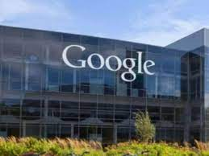
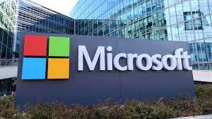
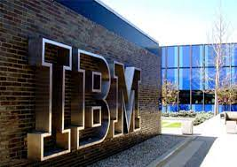
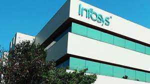

In Hyderabad, the central region of the business happens in Nanakramguda Financial District, HITECH City , the Madhapur suburb , Kokapet SEZ (Neopolis) and Salarpuria Sattva Knowledge City . As of 2022, Hyderabad has 7,78,121 employees in the IT/ITES sector, working in more than 1500 companies.
| photo | industry description | address |
|---|---|---|
|  | Google was founded on September 4, 1998, by Larry Page and Sergey Brin while they were PhD students at Stanford University in California. Together they own about 14% of its publicly listed shares and control 56% of the stockholder voting power through super-voting stock. The company went public via an initial public offering (IPO) in 2004. In 2015, Google was reorganized as a wholly owned subsidiary of Alphabet Inc. Google is Alphabet's largest subsidiary and is a holding company for Alphabet's Internet properties and interests. Sundar Pichai was appointed CEO of Google on October 24, 2015, replacing Larry Page, who became the CEO of Alphabet. On December 3, 201 | Cyber Gateways, Madhapur Phase 2, Hitech City |
|  | Microsoft Corporation is an American multinational technology corporation which produces computer software, consumer electronics, personal computers, and related services headquartered at the Microsoft Redmond campus located in Redmond, Washington, United States. Its best-known software products are the Windows line of operating systems, the Microsoft Office suite, and the Internet Explorer and Edge web browsers. Its flagship hardware products are the Xbox video game consoles and the Microsoft Surface lineup of touchscreen personal computers. Microsoft ranked No. 21 in the 2020 Fortune 500 rankings of the largest United States | ISB Rd, Gachibowli, Hyderabad, Telangana 500032 |
|  | nternational Business Machines Corporation (IBM) is an American multinational technology corporation headquartered in Armonk, New York, with operations in over 171 countries. The company began in 1911, founded in Endicott, New York, by trust businessman Charles Ranlett Flint, as the Computing-Tabulating-Recording Company (CTR) and was renamed "International Business Machines" in 1924. IBM is incorporated in New York. | NSL Arena, Block 1, Wing B 2nd floor, Plot No. 6, |
|  | nfosys Limited is an Indian multinational information technology company that provides business consulting, i nformation technology and outsourcing services. The company was founded in Pune and is headquartered in Bangalore. [5] Infosys is the second-largest Indian IT company after Tata Consultancy Services by 2020 revenue figures and the 602nd largest public company in the world, according to the Forbes Global 2000 ranking.[6]On 24 August 2021, Infosys became the fourth Indian company to cross $100 billion in market capitalization.[7][8]s | Survey No. 210 ISB Road, Lingampally Rd, Manikonda Jagir, |